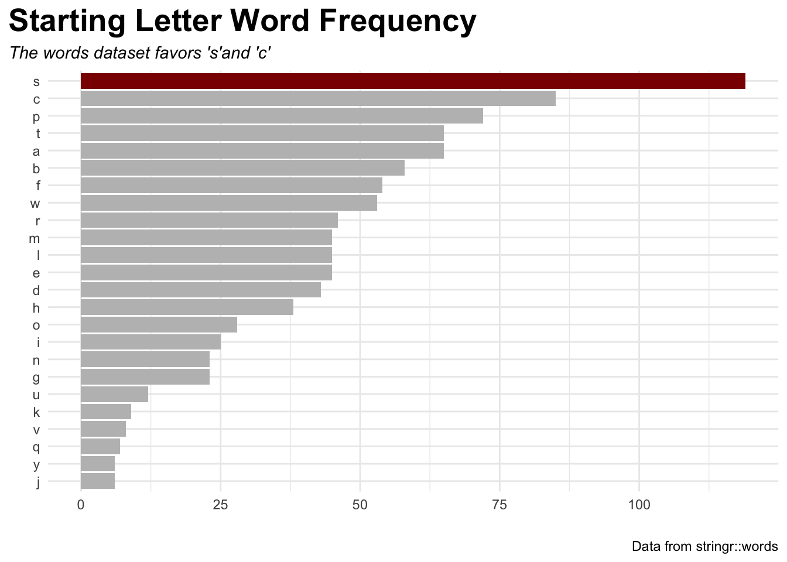

Using dplyr and the stringr::words dataset, we can demonstrate how to extract information from a dataset. Before we get into anything, let us take a look at a few of the characteristics of the stringr::words dataset.
library(stringr) # Text Matchinglibrary(dplyr,warn.conflicts =FALSE) # Data Wranglinglibrary(ggplot2) # Plottinglibrary(forcats) # Managing Categorieslibrary(tidytext) # Word Tokenizationlibrary(huxtable) # Making Tableshead(stringr::words)
[1] "a" "able" "about" "absolute" "accept" "account"
length(words)
[1] 980
A dataset with 980 words seems like a great tool to have!
You could use it to create arbitrary categories.
You could also use it to get some words that fit a certain criteria.
Example 1: Match Five Letter Words
The following regular expression should match the red text below:
Upon the shelf was a penny and a dime
Using str_match_all we can enter a regular expression that will match words that have five characters.
We are returning words that have 5 letters, but are not only five letters in length. To fix this, we will need to add a boundary element (\b) to the start and end of our expression.
words: This is the input dataset (assumed to be a vector or list of words) that will be processed.
2
data.frame(): Converts the words object into a data frame to facilitate data manipulation.
3
mutate() and str_match(): Adds a new column StartsWith, extracting the first letter from each word using a regular expression. unlist() flattens the result into a vector.
4
group_by() and count(): Groups the data by the StartsWith column and counts the number of occurrences for each letter, sorting the counts in descending order.
5
hux(): Converts the resulting grouped and counted data into a huxtable object, which formats the data into a table.
6
theme_article(): Applies the “article” theme to style the table for presentation.
StartsWith
n
s
119
c
83
p
72
a
65
t
65
b
58
Taking a look at the table we can see that there are two words that start with a capital C. This doesn’t halt the process, but it is worth it to see who the culprits are.
word_tbl %>%filter(StartsWith =="C")
Warning: Using one column matrices in `filter()` or `filter_out()` was deprecated in
dplyr 1.1.0.
ℹ Please use one dimensional logical vectors instead.
# A tibble: 1 × 2
# Groups: StartsWith [1]
StartsWith[,1] n
<chr> <int>
1 C 2
For our purposes, it is okay to change these entries to be lowercase. Conveniently, the stringr package really does have it all!
words <-str_to_lower(stringr::words)word_tbl <- words |>data.frame() |>mutate(sw=str_match_all(words,"^.") |>unlist()) %>%group_by(sw) %>%count(sort =TRUE)word_tbl |>head() |>hux() |>theme_article()
sw
n
s
119
c
85
p
72
a
65
t
65
b
58
We could look at the table and make some observations, but it would be better to just graph everything!
Keep in mind that this list of words is only 980 observations long so there are plenty of missing words. With that being said, what letter is represented the most in the stringr::words vector?
word_tbl %>%ggplot(aes(fct_reorder(sw,n),n,fill=n,label = n)) +geom_bar(stat="identity",aes(fill =ifelse(n ==max(n),"darkred","grey"))) +coord_flip() +labs(x ="",y ="",title ="Starting Letter Word Frequency",subtitle ="The words dataset favors 's'and 'c'",caption ="Data from stringr::words") +theme_minimal() +theme(axis.ticks =element_blank(),legend.position ="none",axix.x.text =element_blank(),plot.title.position ="plot",plot.title =element_text(size =20,face ="bold"),plot.subtitle =element_text(face ="italic") ) +scale_fill_identity()
Warning in plot_theme(plot): The `axix.x.text` theme element is not defined in
the element hierarchy.

Most Frequent Word Length in stringr::words
To get a words length, we can use str_length()
# Take a sample of 10 observations from the words packageset.seed(616)ww <-sample(words,10)tibble(word = ww,wl =str_length(ww))
word
wl
nature
6
clothe
6
back
4
other
5
allow
5
suggest
7
however
7
cup
3
mile
4
just
4
Using this same approach we could find out the number of each letter-sized word in the package.
# X-Axis Values for laterxax <-1:11words_t <- words |>data.frame() |>mutate(string_length =str_length(words)) %>%group_by(string_length) %>%count() words_t
---title: "Visualizations: {stringr}"editor: visualhighlight-style: arrowcode-tools: source: truecode-block-border-left: '#31BAE9'code-annotations: hover---Using `dplyr` and the `stringr::words` dataset, we can demonstrate how to extract information from a dataset. Before we get into anything, let us take a look at a few of the characteristics of the `stringr::words` dataset.```{r}#| warning: false#| message: falselibrary(stringr) # Text Matchinglibrary(dplyr,warn.conflicts =FALSE) # Data Wranglinglibrary(ggplot2) # Plottinglibrary(forcats) # Managing Categorieslibrary(tidytext) # Word Tokenizationlibrary(huxtable) # Making Tableshead(stringr::words)length(words)```A dataset with 980 words seems like a great tool to have!- You could use it to create arbitrary categories.- You could also use it to get some words that fit a certain criteria.### Example 1: Match Five Letter WordsThe following regular expression *should* match the red text below:::: five<strong>Upon</strong> the <strong>shelf</strong> was a <strong>penny</strong> and a dime:::1. Using `str_match_all` we can enter a regular expression that will match words that have five characters.```{r}five_letter <-str_match(words,pattern ="\\w{5}") |>na.omit()sample(five_letter,5)```Uh oh!We are returning words that *have* 5 letters, but are not *only* five letters in length. To fix this, we will need to add a boundary element (`\b`) to the start and end of our expression.```{r}five_letter_fixed <-str_match_all(words, pattern ="\\b\\w{5}\\b") |>unlist()head(five_letter_fixed)```::: callout-noteThe use of `unlist()` coerces the result to a vector instead of a list:::The regular expression `\\b\\w{5}\\b` here does the following:- `\b` represents a boundary character. This tells R to look for something to be followed by a space and finished before a space.- `\w` tells R to look for a word-character.- `{5}` tells R to look for a word-character that has a length of exactly 5.- `\b` looks for the second boundary.### Example 2: Finding Words That Start with `aeiou`Here we will use a regular expression that looks for words that start with specific letters.Note: The words dataset is specifically lowercase\*, otherwise we would be using both upper and lower case in our expression.```{r}vowel_words <-str_match_all(words,"\\b^[aeiou].*$") |>unlist()sample(vowel_words,5)```Great!The regular expression does the following:- `\b` - Looks for boundary- `^` - Designates the start of a string.- `[aeiou]` - Matches the start of the string that is either a,e,i,o,or u.- `.` - Looks for any character that follows the first match.- `*` - Looks for an unlimited number of matches until it is told to stop.- `$` - Tells R to look for the end of a string.## Example 2b. Finding words that DON'T start with vowelsWe can use the same regular expression we created earlier and at a **not** qualifier to essentially reverse our search.```{r}str_match_all(words,"\\b[^aeiou].*$") |>unlist() |>sample(5)```Note that by moving the beginning of string qualifier `^` to the inside of the bracket resulted in the opposite of what we were looking for!### Most Common Start Letter Used in `stringr::words````{r}word_tbl <- words |># <1>data.frame() |># <2>mutate( # <3>StartsWith =str_match(words,"^.") |>unlist() # <3> ) |>group_by(StartsWith) |># <4>count(sort =TRUE) # <4>word_tbl |>head() |>hux() |># <5>theme_article() # <6>```1. words: This is the input dataset (assumed to be a vector or list of words) that will be processed.2. data.frame(): Converts the words object into a data frame to facilitate data manipulation.3. mutate() and str_match(): Adds a new column StartsWith, extracting the first letter from each word using a regular expression. unlist() flattens the result into a vector.4. group_by() and count(): Groups the data by the StartsWith column and counts the number of occurrences for each letter, sorting the counts in descending order.5. hux(): Converts the resulting grouped and counted data into a huxtable object, which formats the data into a table.6. theme_article(): Applies the “article” theme to style the table for presentation.Taking a look at the table we can see that there are two words that start with a capital C. This doesn't halt the process, but it is worth it to see who the culprits are.```{r}word_tbl %>%filter(StartsWith =="C")```For our purposes, it is okay to change these entries to be lowercase. Conveniently, the `stringr` package really does have it all!```{r}words <-str_to_lower(stringr::words)word_tbl <- words |>data.frame() |>mutate(sw=str_match_all(words,"^.") |>unlist()) %>%group_by(sw) %>%count(sort =TRUE)word_tbl |>head() |>hux() |>theme_article()```We could look at the table and make some observations, but it would be better to just graph everything!Keep in mind that this list of words is only 980 observations long so there are plenty of missing words. With that being said, what letter is represented the most in the `stringr::words` vector?```{r}word_tbl %>%ggplot(aes(fct_reorder(sw,n),n,fill=n,label = n)) +geom_bar(stat="identity",aes(fill =ifelse(n ==max(n),"darkred","grey"))) +coord_flip() +labs(x ="",y ="",title ="Starting Letter Word Frequency",subtitle ="The words dataset favors 's'and 'c'",caption ="Data from stringr::words") +theme_minimal() +theme(axis.ticks =element_blank(),legend.position ="none",axix.x.text =element_blank(),plot.title.position ="plot",plot.title =element_text(size =20,face ="bold"),plot.subtitle =element_text(face ="italic") ) +scale_fill_identity() ```## Most Frequent Word Length in `stringr::words`To get a words length, we can use `str_length()````{r}# Take a sample of 10 observations from the words packageset.seed(616)ww <-sample(words,10)tibble(word = ww,wl =str_length(ww)) ```Using this same approach we could find out the number of each letter-sized word in the package.```{r}# X-Axis Values for laterxax <-1:11words_t <- words |>data.frame() |>mutate(string_length =str_length(words)) %>%group_by(string_length) %>%count() words_t``````{r}words_t %>%ggplot(aes(string_length, n, fill = string_length)) +geom_bar(stat ="identity",aes(fill =ifelse(n ==max(n),"darkred","grey"))) +coord_flip() +scale_x_continuous(breaks = xax) +theme_minimal() +theme(legend.position ="none",axis.ticks =element_blank(),axis.text.x =element_blank(),plot.title =element_text(face ="bold",size =20),plot.title.position ="plot",plot.subtitle =element_text(face ="italic") ) +scale_fill_identity() +ylim(0, 300) +labs(x ="",y ="",title ="Frequency Distribution of Word Size",subtitle ="Keeping it Short and Sweet!",caption ="Data from stringr::words" ) ```### stringr::sentences`stringr` also contains a sentences dataset.```{r}tibble(line=1:length(sentences),sentence=sentences) %>%unnest_tokens(word,sentence) %>%anti_join(stop_words) %>%group_by(word) %>%count(sort=T) %>%ungroup() |> wordcloud2::wordcloud2()```Whoa! There are sure a lot of sentences with 'red' in them. Let's isolate those 11 sentences.```{r}tibble(line=1:length(sentences),sentence=sentences) |>filter(str_detect(sentences,"\\bred\\b")) |>select(sentence)```